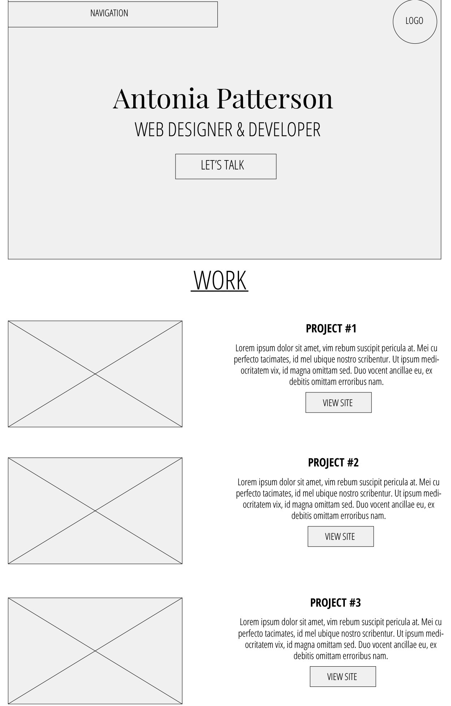
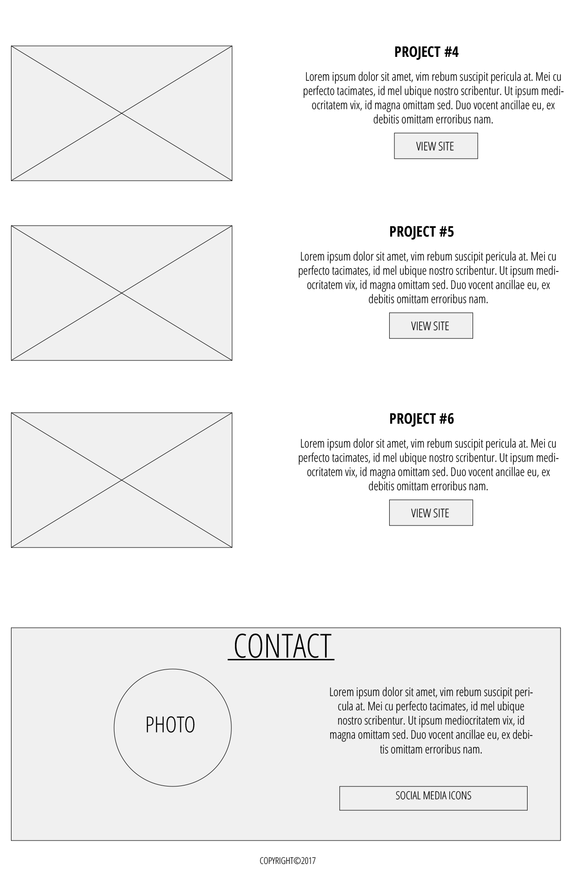
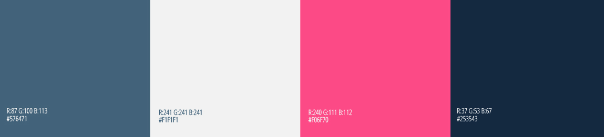
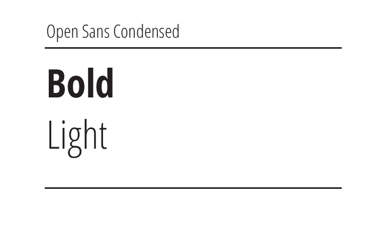
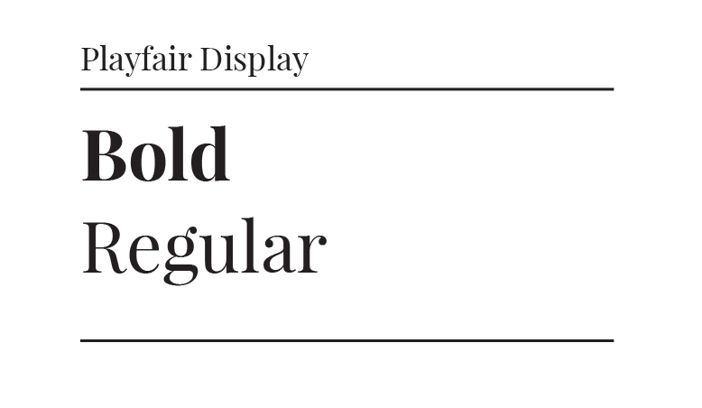

RESULT

The goal of this project was to create a site to showcase my front-end development and design projects. I wanted to create something clean and simple with a pop of color whenever there is a call to action to get the users attention.
 

 
For the logo design I narrowed it down to two options. I ended up going with the double circle logo because I personally thought it went better with the overall design of the site.